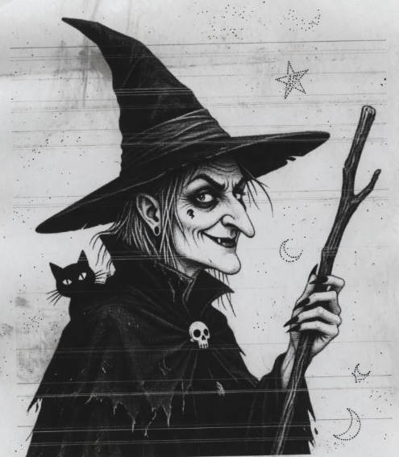
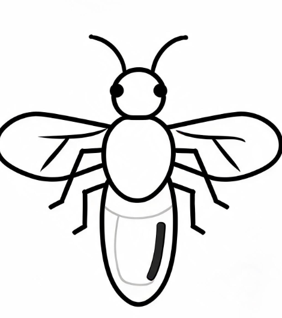

Jednoč davno živeela jedna žena s imenom Rauma. 1765-ee godinee dojde na Pogorje od daleku Polsku i so sobov donese običaje, ama tudi i vešterčarstvo (vražitarenje). Beše debela i imade gustu kosu i mustaće (brci). So njon dojde i mažot ji, tor ne znade što mu žena robi iz dnea u dan.
Jednee noće gu viđe komšija Munàb Baftimov, tor e izašol na avliju, da bi pomuzol kravu i uzol mlejko. Viđe gu na sokakuŕ jàk igrae đinkolo ognja i zbori nekuj ftoŕ jazik, tor nee nitu bosanski nitu pogoreanski. Možebide, da e zborila polskiot abo nekuj još ftoŕivi.

Potomuŕ viđe da se pretvorila u leptira i otiđe ravno na komšiinu kuću i ujde čerez dimnik i se spušti dole kakoŕ, da nee osaba abo da e naistinu leptirot.
Se uplaši i viknul ženu zabrinutó: „Ženole le, dojdi sim malku nešto viđoh. Da li me oka varadut abo e naistinu toja?“
Izajde žena i za kaput go povleče nazad doma i mu kaza: „Vekše, da ne te vidim da si izlazija ob noćiŕ nitu danjuŕ, tomu što može tij se zgoditi isto, što će se i komšii crniot mažele.“